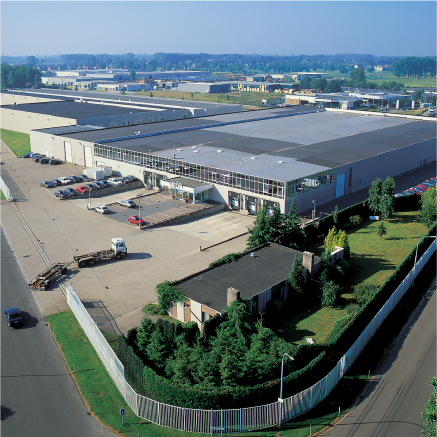

About Company
As one of the top-ten best-selling boxed chocolate brands, Guylian chocolates are sold in over 120 countries across Europe, Asia, Australia and America, and are available in countless retailers across the World, including supermarkets, hypermarkets, department stores, specialty food stores, petrol stations, not to mention online and at the Guylian Belgian Chocolate Cafés. You might also discover the exclusive travellers’ range at speciality travel stores and duty-free shops. All Guylian chocolates are produced in Sint-Niklaas, Belgium, where Guylian Master Chocolatiers produce up to 75 tonnes of chocolate daily in a production area measuring 27.000 m². This allows the Guylian group a worldwide non-consolidated turnover of 80 million euros (2015). In turn, this ensures that Guylian is one of Belgium’s leading chocolate manufacturers, with a team of 250 employees and sales offices in the UK, Germany/Austria, Spain/Portugal and the USA. In June 2008 Guylian was acquired by Lotte Confectionary Co, Ltd, subsidiairy of the publicly listed Lotte Group, the 5th largest economic group in South Korea.